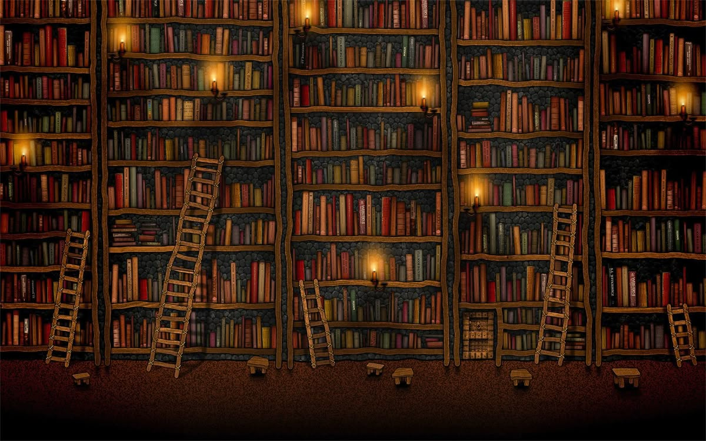

Chào mừng bạn đến với CLB Văn Học Thốt Nốt
Đây là trang web giới thiệu về câu lạc bộ văn học thuộc trường THPT Thốt Nốt
Nơi giao lưu học tập và trải nghiệm nền văn học chân thật.
GIỚI THIỆU CLB
Trong mỗi con người đều có những cảm xúc khó gọi thành lời: một nỗi buồn rất nhẹ khi trời mưa, một niềm vui nhỏ khi nhìn thấy ánh nắng cuối ngày, hay những suy nghĩ lặng lẽ về cuộc sống. Và có lẽ, con chữ chính là cách đẹp nhất để giữ lại những điều mong manh ấy.
CLB Con Chữ Của Chúng Mìnhra đời từ một ước mong giản dị: tạo nên một không gian cho những người yêu văn chương được gặp gỡ, chia sẻ và cùng nhau viết nên những điều có ý nghĩa. Ở đây, con chữ không chỉ là phương tiện để viết, mà còn là cách để mỗi người lắng nghe chính mình và hiểu thêm về thế giới.
Lý tưởng của CLB không phải là tạo ra những nhà văn lớn ngay lập tức, mà là nuôi dưỡng tình yêu với văn chương, khả năng cảm nhận cuộc sống và sự chân thành trong từng câu chữ. Chúng mình tin rằng khi một người biết viết, biết đọc và biết suy nghĩ sâu sắc, họ cũng sẽ biết sống đẹp hơn.

"Một vạn năm sau..."
Tôi đã chọn em,
Người sẽ sống...
Người sẽ thay tôi ở lại đời,
Người đã đi qua một dòng sông.
Vớt lấy tôi đang buồn tủi
Dưới đáy lòng!
Tôi chọn em, tôi thì thầm nói nhỏ
Gửi cho em mấy màu nắng ngây thơ
Bởi hồn em giờ đâu có dại khờ
Còn hồn tôi giờ đây đang run sợ
Cánh phượng tàn rồi...
Sắp chia phôi!
Tôi muốn
Hóa vì sao
Cạnh vầng trăng khuyết
Tôi gửi hồn mình
Đắm! dưới làn nước đại dương...
Tôi đã nói là tôi sẽ kiên cường
Qua tháng năm mà đời tôi bất hạnh
Tôi khát sống! Như người trong bão lạnh
Như chiếc lá vàng ước được xanh.
Nhưng em ơi!
Mơ chỉ là ảo tưởng
Còn cuộc đời mới là thịt là xương.
Nếu nỗi đau bỗng chốc hóa tầm thường
Thì còn ai sẽ gọi tên hạnh phúc.
Xin lỗi em! Tôi gối đầu tạ lỗi
Tôi bội thề làm vỡ trái tim em!
Nhưng...
Em bảo lòng em là biển cả
Còn anh là chiếc thuyến đắm khơi xa
Và biển sẽ ôm thuyền kia mãi mãi
Để lòng em chẳng cách anh một ngày.
Biển khơi sẽ giữ! Thuyền ở lại
Đến vạn năm sau!
Nắng bạc màu...
Thế là ta sẽ gặp lại chính ta,
Ở vạn ngày sau...đôi mắt khép
Anh là hồn em đã chết
Em là xác anh đã mòn
Khi hai ta tưởng chừng là xa lạ
Em đã là anh của năm tháng sau này.
-Hiểu Phong- 25.10.25